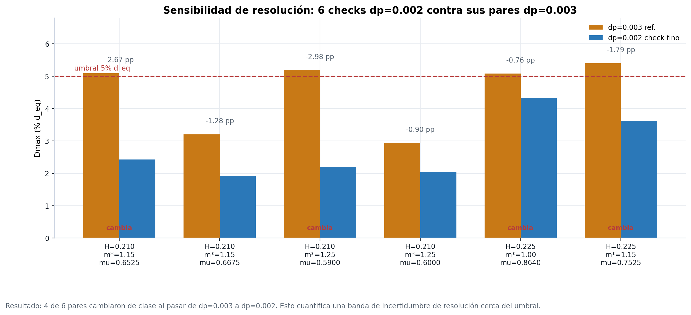
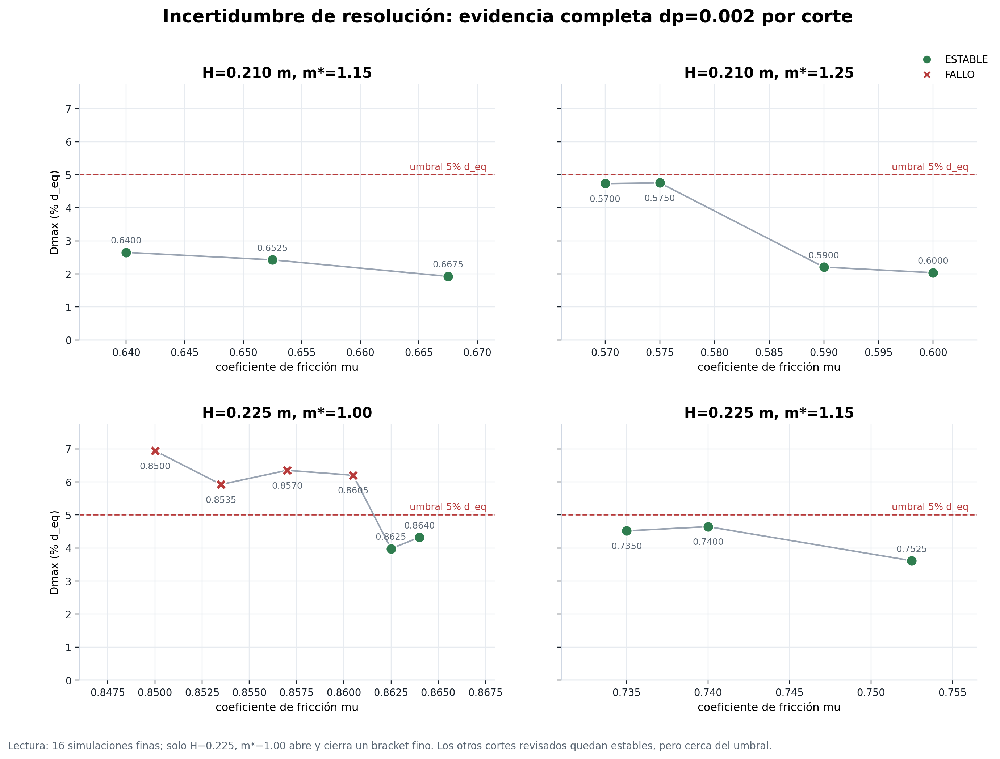
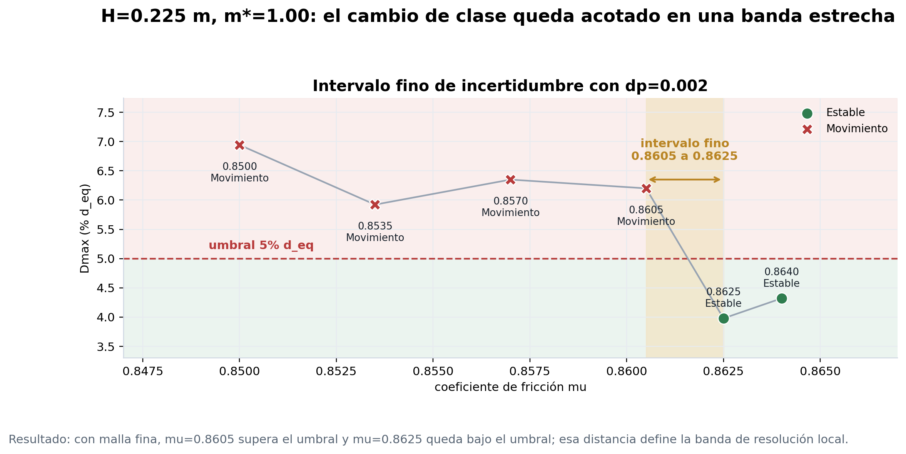
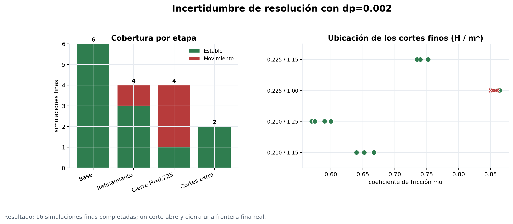

Incertidumbre de resolución
Lectura separada de los chequeos finos dp=0.002 y su efecto sobre la frontera de movimiento.
Qué mide esta página
Esta sección separa la incertidumbre de resolución de los resultados principales. Las simulaciónes dp=0.002 se usan para medir cuanto cambia la clasificación cerca del umbral cuando se refina la discretización.
Intervalo fino: en
H=0.225 m y m*=1.00, mu=0.8605 supera el umbral y mu=0.8625 queda bajo el umbral. El intervalo entre ambos es la banda local de transición con malla fina.- Simulaciones finas
- 16/16 completadas
- Resultado global
- 12/4 estable / movimiento
- Intervalo fino
- 0.8605-0.8625 movimiento a estabilidad
- Uso
- banda incertidumbre de resolución
Evidencia fina



